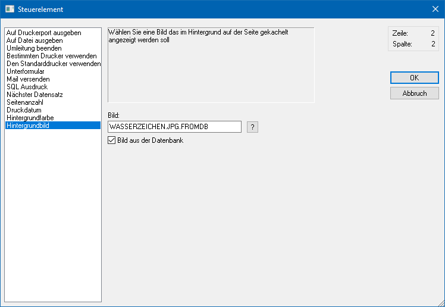
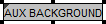

Mit Hilfe des Steuerelements "Hintergrundbild" kann dem gesamten Formular ein Hintergrundbild hinterlegt werden (Wasserzeichen). Dieses Hintergrundbild wird nur in der Vorschau verwendet und nicht bei einem Druck bzw. einem PDF-Export.
Hinweis
Damit dem gesamten Formular ein Hintergrundbild zugewiesen wird, muss das Steuerelement im Kopfbereich an der ersten Stelle (rechte Maustaste - Funktion "In den Hintergrund") platziert werden.

Ø Bild
Im Eingabefeld "Bild" kann die Datenquelle der Grafik angeben werden, welche in das Formular eingebunden werden soll. Falls der Dateiname nicht bekannt ist, kann - analog dem Matchcode der WinLine Programme - mit einem Klick auf das Fragezeichen nach dem Bild gesucht werden. Es empfiehlt sich, alle eingebundenen Grafiken in einem zentralen Verzeichnis (z.B. am Server) zu speichern oder in den Systemtabellen der WinLine zu verwalten.
Hinweis
Mit Hilfe der Option "Bild aus der Datenbank" wird gesteuert,
ob das Bild in einen Windows-Verzeichnis liegt oder sich in der
WinLine-Systemdatenbank befindet. Dementsprechend wird auch der Matchcode per
Icon  dargestellt.
dargestellt.
Ø Bild aus der Datenbank
In der WinLine gibt es die Möglichkeit die Grafikdateien zentral in der SQL-Datenbank (Systemdatenbank) abzulegen (nähere Informationen dazu entnehmen Sie bitte dem WinLine START-Handbuch, Kapitel "Grafiken importieren"). Mit dieser Option wird festgelegt, dass das Hintergrundbild eben aus dieser Datenbank gedruckt wird.
Darstellung im Formular
Im Formular werden Steuerelemente des Typs "Hintergrundbild" wie folgt dargestellt:
ü

Zusätzlich wird in der Buttonleiste "Elementeigenschaften" der Inhalt (gemäß des definierten Bilds im Steuerelement) wie folgt dargestellt:
ü